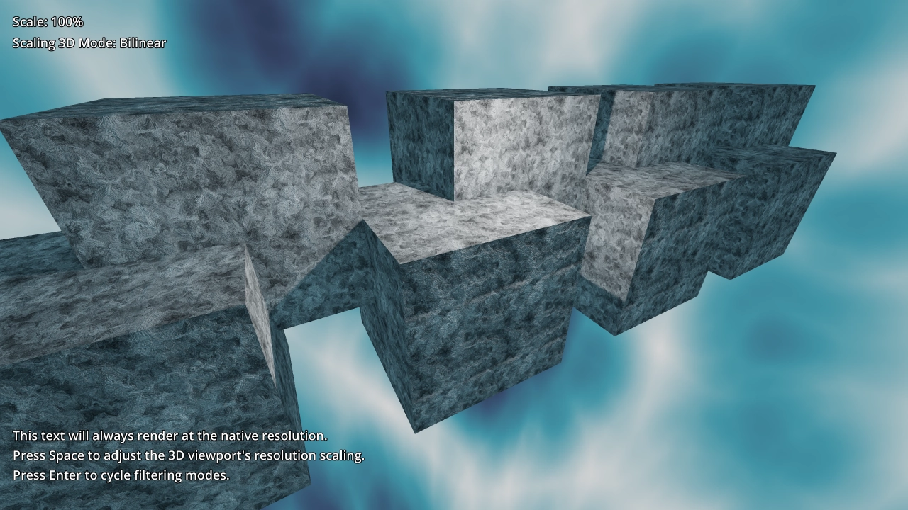
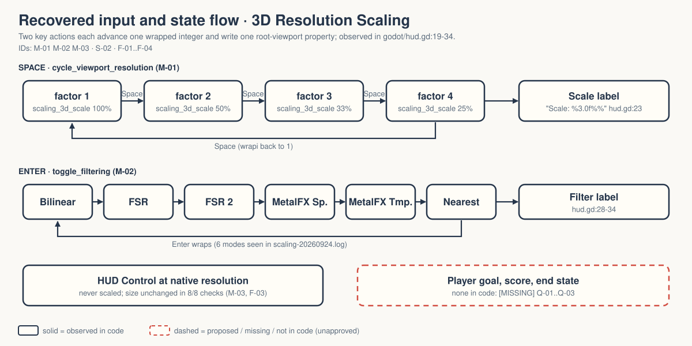

Space drops the 3D render resolution to 50/33/25%. Enter cycles the 3D scaling mode. The HUD text is meant to stay crisp throughout.
OBSERVED in code INFERRED implied MISSING nobody has decided
Gate — unsigned at time of writing. Nothing here is approved. → GDD.md

OBSERVED shipped with the Godot demo (godot/README.md:17). Walker has verified no GPU scaling quality or HUD pixels (FRICTIONAL.md:14-16).
MISSING Purpose in Walker, audience, demo-or-game. Q-01..Q-03.
OBSERVED Upstream intent: "downscale the 3D resolution without affecting 2D elements" (godot/README.md:3-4).

Solid = code. Dashed = what a game would add; not in code.
3 of 7 CORE (factor cycle, mode cycle, unscaled HUD). Over 40%; harmless for a three-idea demo. Both options in Q-07.
Q-01 purpose · Q-02 audience · Q-03 demo or game · Q-04 per-mode visual criteria · Q-05 performance claim · Q-06 film done · Q-07 CORE · Q-08 unreferenced font · Q-09 "Metalfx" label
Zelda: Q-04 first. If the label lies on the capture machine, the film teaches the wrong thing. → decisions.md